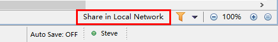
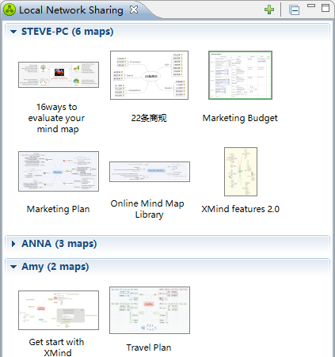
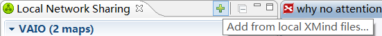
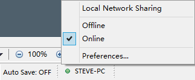

Local network sharing is designed to share the mind map among people who are in one local network, esp. one office. It is very simple and effective. Everybody can share their works with one click only. Then the colleagues will read the latest file anytime. And more, we can even push the messages with the shared maps. Now let's know more about it.
Share an Map
- Launch XMind, open a map.
- There are two ways to share this map,
- Choose "File > Share in Local Network" on the menu.
- Click "Share in Local Network" button on the bottom.

- Then the Local network sharing view will be shown. And this map will be there with all other shared maps.

You can also share any a map on your driver without opening it first. Below are the steps.
- Launch XMind
- Choose "View -- Local Network Sharing" from menu to Open the Local Network Sharing view.
- Click the plus button on the view toolbar
 - Select the existing file from your driver and click Ok.
After sharing a map, all your modification on this map will be shared at the same time. So your colleagues can read
your latest map asap. And Yes, you can read others' map too. Just please click the shared map in this Local Network Sharing view.
Then your XMind will get a copy of that map and open it automatically.
It's simple and fast.
Send message
XMind brings the message function with the local sharing. So when you share a map in local network, you can also attach a message with this map. This message could be map summary, instruction, questions or anything. The steps are,
- Choose "View -- Local Network Sharing" from menu to Open the Local Network Sharing view.
- Right-click one map shared by yourself.
- Select "Send Message for these maps..".
- In the coming message dialog, please choose receiver and input the message.
- Click "Ok" to send this message.

- Note
- You can send the message only for the maps you shared.
- Currently, one message can be sent a specific person or all available users in the local network.
Online/Offline status
Normally, all users will be shown and available after enabling the local network sharing in the preferences. Then, people can share map with me and send message to me. But we may not want to be interrupted anytime. So here we can set the Online/Offline status.
Just please click the status button on XMind bottom toolbar, then we will see Local Network Sharing, Offline, Online, and Preferences... options. Choosing offline will make sure we will not receive any message from the local network.
Local Network Sharing preferences
Local Network Sharing has a separated page in the preferences dialog (Edit -- Preferences -- Local Network Sharing). Here, we can set the computer name in the local network, and disable/enable this Local network sharing service.
Bonjour service
Local Network Sharing feature requires the Apple Bonjour service. So when XMind runs this feature and finds no Bonjour on the computer, XMind will ask if installing Apple's Bonjour or not. Now, we can press Yes to install it. Then we can enjoy this great local network sharing service.